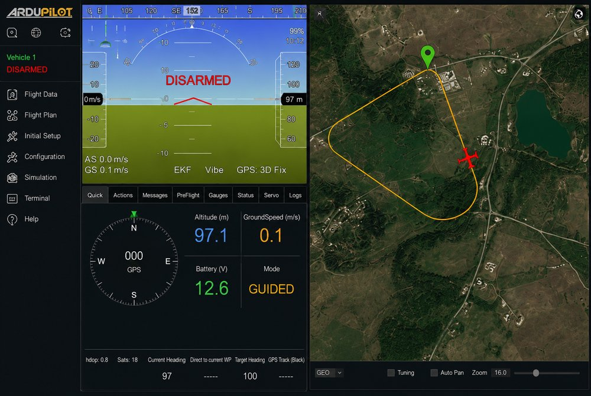
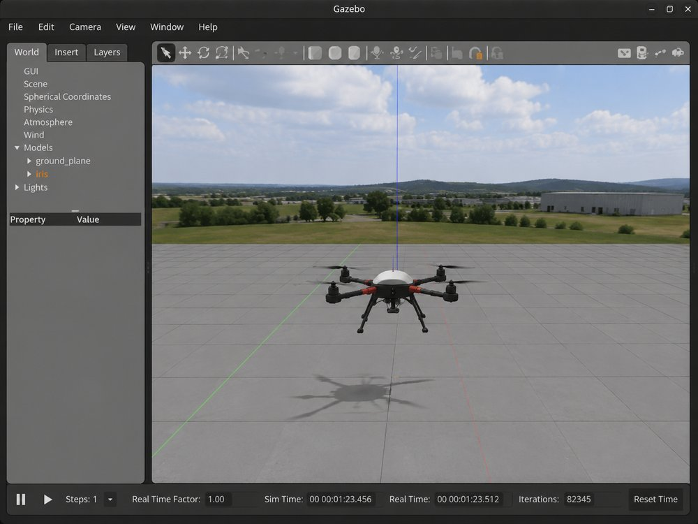
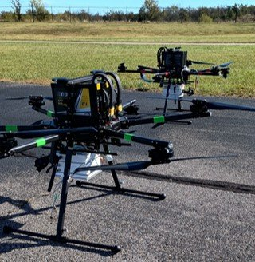
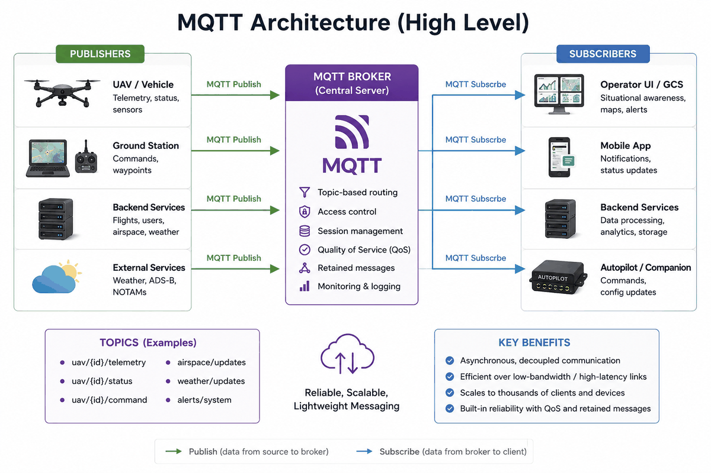
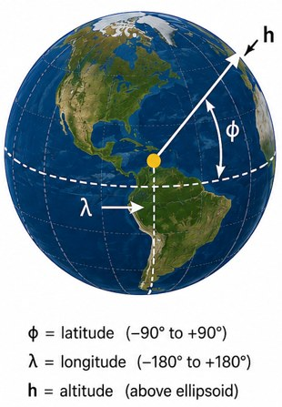
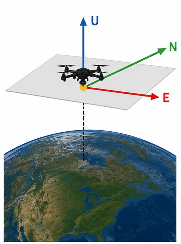
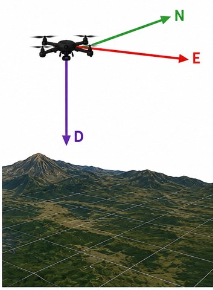
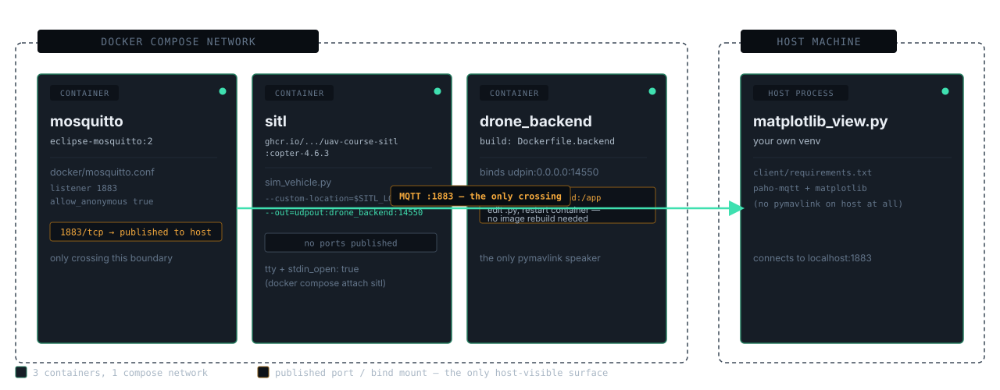
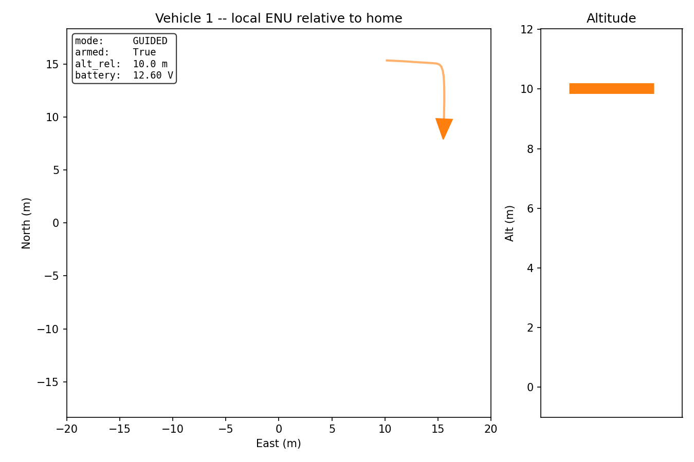

UAV Infrastructure
Stage 1 — ArduPilot SITL, an MQTT contract, and your first drone frontend.
STAGE 1 OF 6 · pymavlink ↔ MQTT plumbingWhat is ArduPilot?
The open-source autopilot firmware that flies the aircraft — not a simulator, not a toy, the real flight-control stack.
- Real flight-control firmware — runs the actual control loop: attitude stabilization, navigation, failsafes. The exact binary you'll run in SITL this semester is what flies real aircraft.
- Broad platform support — multicopters, fixed-wing, rovers, submarines, all from one open-source project with a long track record (in active development since 2007).
- Production-grade, not academic — used across industry, research labs, and hobbyist communities worldwide, with a large contributor base and active safety-critical development.
Why ArduPilot, not PX4?
Both are excellent, mature, open-source autopilot stacks. The decision here isn't about which is "better."
Code, MAVLink message handling, and workflows you build against SITL this semester carry over directly to the physical hardware later — same firmware family, same parameters, same behavior.
PX4 is a strong, actively developed alternative used widely in research. If your target hardware ran PX4, this course would too — the choice tracks the aircraft, not a technical preference.
What is SITL?
Software-In-The-Loop: the real ArduPilot flight-code binary, running against a simulated physics model instead of real motors and sensors.
- No hardware, no risk — safe to crash, safe to experiment, safe to make the mistakes you'll learn from.
- Not a toy simulator — it's the identical firmware that runs on the physical flight controller, just fed simulated sensor data instead of real ones.
- Why not Gazebo? Our SITL uses ArduPilot's own lightweight built-in physics model, not a 3D physics/rendering engine. Gazebo needs real GPU-accelerated OpenGL, and in a prior run of this kind of exercise that broke unpredictably across a room of student laptops — opaque failures, exactly what derails a live class session. ArduPilot's internal model is enough for GPS, attitude, battery, and mission logic; Gazebo stays opt-in for a team that specifically needs camera or collision simulation later.


Meet your (future) real hardware
Everything this week runs in simulation. This is what your code eventually flies on.

The big picture

Why MQTT as the interface?
The topic schema is the contract — a clean, concrete example of interface design, not just plumbing.
- Multiple frontends, one shared contract — many students or teams can build against the same documented topics without touching the backend.
- Swappable by design — replacing matplotlib with a real map-based GUI later (Stage 2) requires zero backend changes.
- A lesson in its own right — this decoupling is exactly the kind of interface-design decision you'll be asked to make and defend in real systems.

The MQTT contract — real topics, real JSON
Published once, retained by the broker — any client subscribing later still gets it immediately, including clients that join mid-flight.
Retain makes the broker hold real state, not just relay it — is that MQTT's job?
Coordinate frames: LLA vs. local ENU
Lat / lon / alt is the only frame that ever crosses a system boundary — it matches how MAVLink represents position natively, and stays stable as more clients join.
Metres-from-an-origin math a client computes for its own use (e.g. a legible 2D plot). Never published, never shared truth between clients.
Two clients quietly disagreeing about where "local (0,0)" is is a bug class that's miserable to debug. The retained uav/<id>/home topic fixes this — one shared origin for every client.



Starting the infrastructure

Start the viewer
- Activate your venv
source client/.venv/bin/activate - Run the viewer
python client/matplotlib_view.py - In a second terminal, fly something
python scripts/test_flight.py - Watch it moveTrail, heading triangle, and altitude gauge all update live — this is real telemetry, not a mockup.

Known quirks worth knowing
None of these are bugs in your code. They'll look like it if you don't know them going in.
ArduCopter leaves mode: "LAND" reported indefinitely after touchdown and disarm — it only changes on the next explicit mode switch. Check armed too if "currently landing" matters.
EKF/GPS not settled yet, or "Gyros inconsistent." Expected, not a bug — handle it with bounded retries, not by failing immediately.
Mainly bites during manual MAVProxy console testing — arm and issue your next command in one quick burst, or it disarms out from under you.
Getting SITL without a 10–20 minute build
ArduPilot builds from source by default. Nobody should have to sit through that on the first day of class.
- Pre-built and pinned —
Copter-4.6.3, built once fromardupilot-dev-base, pushed to a public GHCR image. You rundocker compose pull, not a source build. - Apple Silicon note — the image is
linux/amd64only (no arm64 build exists upstream). It runs fine under Docker Desktop's Rosetta-accelerated emulation — one-time setting, covered in SETUP.md. - Bumping the version later is one script and one
.envline — nothing else in the repo changes.
What you'll actually do
- Start SITL, then MosquittoSkip the built-in map GUI while debugging — one less window competing for attention.
- Build drone_backend.py, verify in isolationConfirm telemetry with
mosquitto_sub -t 'uav/#' -vbefore writing any client. - Build matplotlib_view.py, confirm it movesFly SITL manually first to check the viewer reflects real telemetry.
- Wire up commands lastArm/takeoff/goto/land over MQTT — isolating variables, one layer at a time.
Run one command
Not a setup guide to follow by hand — a single script that tells you pass/fail in plain English.
If it fails, it tells you exactly what broke and what to do next — not a stack trace. Stuck for more than a few minutes? Pair with your neighbor before flagging it down — most classroom setup failures are one of a small, known set.
scripts/test_flight.py runs the same idea end-to-end: arm → takeoff → small square → land, entirely over MQTT. Each command re-publishes every 8s until its telemetry-based success condition is met — so it self-heals against a dropped UDP command or the cold-start pre-arm flakiness above, instead of just failing once.